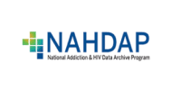
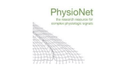
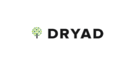
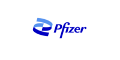
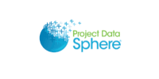
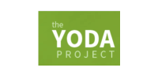
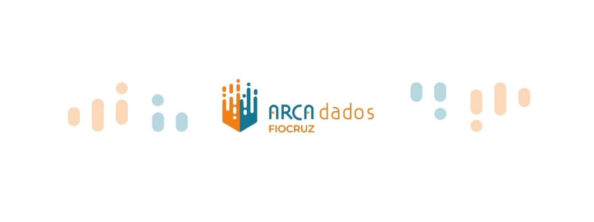

Módulo 4 . Aula 7
Requisitos de financiadores de revistas científicas, plataformas e repositórios de dados e data papers.
Módulo 4 . Aula 7
Requisitos de financiadores de revistas científicas, plataformas e repositórios de dados e data papers.
 Objetivos da
aula
Objetivos da
aula
Nesta aula vamos explorar as políticas dos financiadores, os requisitos das revistas científicas para a publicação de artigos e as opções de repositórios de dados no campo da saúde. Ao final, você será capaz de:
- Conhecer as políticas de financiadores de pesquisa em relação a gestão, compartilhamento e abertura de dados.
- Identificar as principais solicitações de revistas científicas em relação aos dados para pesquisa.
- Conhecer os principais repositórios e plataformas de dados em diversas áreas do conhecimento.
- Conhecer o repositório de dados para pesquisa da Fiocruz, o Arca Dados, e os principais motivos para utilizá-lo.
- Compreender os data papers como inovação no campo da comunicação científica.
Políticas de financiadores de pesquisa
As políticas de financiadores de pesquisa têm se tornado cada vez mais rigorosas no que diz respeito à gestão, compartilhamento e abertura de dados. Essa evolução reflete uma crescente consciência sobre a importância da transparência, reprodutibilidade e acessibilidade dos dados de pesquisa para a integridade científica. Neste sentido, essa mudança está sendo implementada por meio de políticas e orientações que definem boas práticas em pesquisa, especialmente em projetos financiados com recursos públicos.
No contexto de acesso a dados de pesquisa, as diretrizes são influenciadas pela Organização para a Cooperação e Desenvolvimento Econômico (OCDE), que defende que os dados financiados com recursos públicos devem ser considerados um bem público. Em documentos como a Declaration on access to research data from public funding, publicada em 2004, o OECD Principles and Guidelines for access to research data from public funding, lançado em 2007, a organização sublinha a importância de tornar esses dados acessíveis de forma aberta e responsável para impulsionar o progresso científico e a inovação.
Diversos financiadores, como o Conselho de Pesquisa do Reino Unido (Research Councils UK) e a Comissão Europeia (Royal Society e o Wellcome Trust), estabelecem políticas que obrigam os pesquisadores a preservarem e a compartilhar os dados que sustentam os resultados de suas pesquisas.
Em 2011, o Research Councils UK (RCUK) estabeleceu como seu o primeiro princípio de que "dados de pesquisa financiados com recursos públicos são um bem público, produzidos no interesse da sociedade, e devem ser disponibilizados abertamente com o menor número possível de restrições, de maneira oportuna e responsável” (tradução nossa). Nesse sentido, os dados são considerados um bem público, devendo estar abertos a todos os interessados e preservados para reutilização futura.
Os seguintes elementos são comuns nas políticas da maioria dos financiadores:
O caráter indutor das políticas de financiadores, que passaram a exigir a elaboração de um Plano de Gestão de Dados (PGD) para a concessão de recursos financeiros para pesquisa, impacta diretamente as instituições de ensino e pesquisa, assim como as práticas de gestão, compartilhamento e abertura dos dados realizadas por pesquisadores. Como abordado na aula 6, o Plano de Gestão de Dados (PGD) é um documento no qual o pesquisador descreve e organiza as atividades e processos associados ao ciclo de vida dos dados. Os PGDs descrevem como os dados serão coletados, armazenados, analisados e preservados de forma a assegurar que sejam organizados de forma adequada e que as práticas de gestão estejam alinhadas com normas e regulamentos relevantes.
Aspecto essencial das políticas de financiadores, que, por sua vez, promovem a criação de repositórios de dados acessíveis publicamente com o objetivo de garantir que eles possam ser compartilhados e utilizados por outros pesquisadores, fomentando assim a colaboração e a validação dos resultados. A ideia é que os dados não permaneçam restritos aos pesquisadores que os coletaram, geraram ou produziram.
É uma prioridade crescente, especialmente no que se refere a dados gerados com recursos públicos. Nessa perspectiva, diversas agências também exigem que os dados sejam disponibilizados em formatos abertos e interoperáveis, facilitando o acesso e a reutilização por outros pesquisadores. A ideia é que a abertura de dados não apenas aumente a transparência, mas também acelere a inovação e a descoberta científica ao permitir que outros construam sobre trabalho já realizado.
A implementação dessas políticas visa não apenas atender às expectativas dos financiadores, mas também promover integridade e confiabilidade à pesquisa científica. Gestão adequada, compartilhamento eficiente e abertura dos dados são fundamentais para garantir que os resultados da pesquisa possam ser reutilizados, replicados, validados e aplicados de forma eficaz. O objetivo é maximizar o impacto dos investimentos em pesquisa e beneficiar a sociedade como um todo.
Com essas práticas cada vez mais consolidadas, o cenário da pesquisa está se transformando, exigindo uma abordagem mais rigorosa e transparente no manuseio de dados. Isso representa um avanço significativo para a ciência e para a forma como o conhecimento é gerado e compartilhado.
Principais políticas sobre gestão, compartilhamento e abertura de dados no campo da saúde (abril, 2025)
Financiadores internacionais
pan_tool_alt CliqueToque e arraste para passar os cartões
Agentes nacionais de fomento à pesquisa
pan_tool_alt CliqueToque e arraste para passar os cartões
Requisitos de revistas científicas
Muitas revistas científicas já exigem que dados e outros materiais suplementares sejam disponibilizados no momento da submissão do artigo. Essa solicitação pode incluir não apenas os dados brutos (como conjuntos de dados), mas também protocolos de pesquisa, códigos de análise e outros materiais necessários para reproduzir o estudo. Esses requisitos visam facilitar a verificação dos resultados e a realização de análises adicionais por outros pesquisadores. As principais vantagens dessas exigências são:
pan_tool_alt Clique Toque nas imagens para visualizar as informações.
Cada vez mais as revistas exigem que os dados sejam depositados em repositórios (como o Zenodo, Dryad, Figshare, entre outros) como requisito do processo de submissão dos artigos, o que garante que, no mínimo, os metadados dos conjuntos de dados estejam disponíveis para a comunidade.
As políticas editoriais das revistas variam conforme o campo científico, mas algumas tendências gerais podem ser observadas:
Geralmente são mais rígidas na exigência de disponibilização de dados, com foco em garantir que todo o conteúdo da pesquisa seja acessível ao público e à comunidade científica. Um exemplo é a PLOS One.
Publicações como a Nature, Science e Cell adotam uma abordagem mais flexível, mas com fortes recomendações para que os dados sejam compartilhados. Muitas vezes, exigem que os dados sejam depositados em repositórios e acessados abertamente ou mediante a solicitação, com base na natureza da pesquisa e nas considerações de privacidade ou ética.
Quando os dados envolvem informações sensíveis (como dados clínicos ou dados de pesquisas envolvendo seres humanos), pode haver restrições legais ou éticas ao compartilhamento. Nestas situações, as revistas geralmente sugerem que o acesso seja restrito.
Além disso, há uma crescente aceitação de preprints e propostas para mudanças nas formas de avaliação por pares, que agora estão se tornando mais abertas. Esses são alguns desafios que as revistas científicas terão que enfrentar no futuro.
Plataformas e repositório de dados: como localizar um?
No campo da saúde, a gestão e o compartilhamento de dados são particularmente críticos devido à sua relevância para a pesquisa clínica, epidemiológica e biomédica. Repositórios de dados especializados em saúde, como o National Institutes of Health (NIH) Data Repositories, o Infectious Diseases Data Observatory (IDDO) e Influenza Research Database, desempenham papel essencial no armazenamento e disponibilização de dados de pesquisa. Eles garantem a integridade e a segurança dos dados e também oferecem suporte para sua interoperabilidade e acessibilidade.
Os pesquisadores são incentivados a depositar dados nesses repositórios para facilitar sua reutilização e colaboração com outros, contribuindo para o avanço da ciência e a melhoria dos cuidados de saúde.
Existem diversas plataformas que ajudam os pesquisadores de variadas disciplinas na busca de repositórios de dados. São eles:
A DataCite é uma organização sem fins lucrativos que trabalha para melhorar a visibilidade e o acesso a dados de pesquisa por meio do uso de identificadores digitais persistentes chamados DOIs (Digital Object Identifiers). Os identificadores são amplamente utilizados para tornar os conjuntos de dados, publicações e outros recursos de pesquisa mais facilmente localizáveis e citáveis, promovendo interoperabilidade e compartilhamento de forma mais eficaz. Também desenvolve ferramentas e sistemas para facilitar a descoberta de dados, como o DataCite Search, que permite que os usuários encontrem conjuntos de dados, artigos, publicações e outros materiais científicos que tenham um DOI atribuído, de forma simples e acessível.
A FAIRsharing é uma plataforma que oferece um catálogo abrangente que inclui repositórios de dados, vocabulários e padrões de metadados no qual os usuários podem buscar e explorar recursos que atendem aos princípios FAIR, ajudando-os a encontrar os repositórios e ferramentas mais adequados para suas necessidades de pesquisa.
A OpenAIRE Explore é uma plataforma de pesquisa e descoberta de dados científicos desenvolvida pelo Open Access Infrastructure for Research in Europe, que oferece acesso a uma vasta gama de dados de pesquisa e recursos acadêmicos. Seu objetivo principal é facilitar a localização e o acesso a publicações científicas, dados de pesquisa e outros materiais acadêmicos relevantes, promovendo a transparência e a abertura na ciência. A plataforma está alinhada com as políticas e iniciativas de acesso aberto da União Europeia e de instituições, facilitando o cumprimento das normas de divulgação e compartilhamento de dados de pesquisa.
O Re3data (Registry of Research Data Repositories) é um catálogo internacional que oferece informações detalhadas sobre repositórios de dados, cobrindo uma ampla gama de áreas científicas e disciplinas acadêmicas. Sua ferramenta de busca permite que os usuários localizem repositórios com base em diferentes critérios, como disciplina, tipo de dados e localização geográfica de forma a atender às especificidades das pesquisas. Para cada repositório listado, o Re3data fornece informações como descrição do repositório, tipo de dados que armazena, políticas de acesso e preservação, características técnicas etc
Portanto, os repositórios de dados oferecem não só armazenamento seguro, mas também um conjunto de ferramentas e práticas que garantem organização, interoperabilidade, citação e acessibilidade aos dados, favorecendo sua reutilização e aumentando a transparência na ciência.
Alguns repositórios de dados em saúde
| Cancer Imaging Archive | Serviço que desidentifica e hospeda conjunto de imagens médicas relacionadas ao câncer, tornando-as acessíveis para download público. Permite o acesso a dados de imagens para análises, desenvolvimento de algoritmos de diagnóstico e outros estudos na área de oncologia. | |
| ImmPort | Plataforma projetada para armazenar, gerenciar e compartilhar dados relacionados a estudos sobre imunologia e doenças infecciosas. Mantido pelo National Institute of Allergy and Infectious Diseases (NIAID), que faz parte dos National Institutes of Health (NIH) dos Estados Unidos. Permite que pesquisadores acessem e compartilhem dados científicos de forma colaborativa. | |
 |
National Addiction & HIV Data Archive Program (NAHDAP) | Programa dedicado ao armazenamento e à disseminação de dados relacionados ao estudo de substâncias legais e ilícitas, além das trajetórias, padrões e consequências do uso dessas substâncias. O NAHDAP também abrange preditores e resultados relacionados ao comportamento aditivo, ao HIV e outras questões correlatas. |
| NIMH Data Archive | Plataforma desenvolvida pelo National Institute of Mental Health (NIMH) dos Estados Unidos para gerenciar, armazenar e compartilhar dados relacionados à saúde mental (informações científicas e clínicas na área). | |
 |
PhysioNet | Plataforma que oferece recursos e ferramentas para a análise de dados fisiológicos e biomédicos; facilita o acesso a conjuntos de dados e a aplicação de técnicas analíticas avançadas em diversas áreas da saúde. |
| Synapse | Plataforma de colaboração e compartilhamento de dados especialmente focada em áreas como biomedicina e genômica. | |
| SICAS Medical Image Repository | Repositório de imagens médicas. |
Quer conhecer mais plataformas de repositórios de dados?
Aqui estão alguns exemplos de repositórios que facilitam o acesso e o compartilhamento de dados clínicos, demográficos, epidemiológicos, sociais e multidisciplinares.
Seu repositório de dados, o INDEPTH Network Data Repository, financiado pelo Wellcome Trust, disponibiliza microdados longitudinais anônimos para apoiar a formulação de prioridades e políticas de saúde com base em evidências científicas atualizadas.
| Archaeology Data Service (ADS) | Repositório credenciado no Reino Unido para dados de arqueologia e ambiente histórico, com mais de 25 anos de experiência no apoio à pesquisa, ensino e aprendizagem. | |
| ClinicalStudyDataRequest.com | Consórcio de provedores de dados de estudos clínicos que facilita o acesso a dados em nível de paciente, promovendo transparência e compartilhamento de informações para a pesquisa científica. | |
 |
Dryad Digital Repository | Plataforma dedicada à curadoria e ao compartilhamento de dados de pesquisa associados a publicações científicas. |
| Figshare | Permite upload e compartilhamento de uma ampla gama de resultados de pesquisa, incluindo conjuntos de dados, códigos, pôsteres, apresentações, figuras e outros materiais acadêmicos. | |
| Harvard Dataverse | Repositório de dados de pesquisa desenvolvido pela Universidade de Harvard, que permite compartilhamento, preservação, citação, exploração e análise de dados de pesquisa por pesquisadores de todo o mundo. | |
| Humanities Commons | Plataforma criada para atender às necessidades de pesquisadores das Humanidades, oferecendo diversos serviços, incluindo o Commons Open Repository Exchange (CORE), um repositório de acesso aberto para registro e preservação de pesquisas. | |
| Institute for Social Research (ICPSR) | Promove armazenamento, acesso e reutilização de dados digitais de pesquisa em ciências sociais e áreas afins. | |
| INDEPTH Network | Rede global de centros de pesquisa em sistemas de vigilância de saúde e demografia (HDSSs), que realiza avaliações longitudinais de saúde e demografia em populações de países de baixa e média renda (LMICs). | |
| National Sleep Research Resource | Repositório que compartilha grandes volumes de dados do sono de várias coortes, ensaios clínicos e outras fontes de dados. | |
| OpenScience Framework (OSF) | Repositório de gerenciamento de projetos, gratuito e de código aberto, que oferece suporte durante todo o ciclo de vida de um projeto de pesquisa. | |
 |
Pfizer Trial Data & Results | Recurso de compartilhamento de dados de testes clínicos conduzidos pela indústria farmacêutica Pfizer. |
 |
Project Data Sphere | Plataforma digital gratuita que oferece à comunidade de pesquisa a possibilidade de compartilhar, integrar e analisar dados históricos, em nível de paciente, de ensaios clínicos de câncer de fase III. |
| Qualitative Data Repository (QDR) | Oferece dados de pesquisas qualitativas e metodologias em ciências sociais, além de orientações sobre gestão, compartilhamento, citação e reutilização de dados qualitativos, promovendo padrões comuns e transparência em pesquisa. | |
| SciELO Data | Repositório multidisciplinar para depósito, preservação e disseminação de dados de pesquisa relacionados a artigos submetidos, aprovados ou já publicados em periódicos da Rede SciELO. | |
| Science Data Bank (SCIDB) | Repositório público, global e aberto para a publicação de dados científicos. | |
| Social Science Research Network (SSRN) | Repositório que oferece artigos de pesquisa e dados em áreas como economia, ciência política, sociologia e outras ciências sociais. | |
| Vivli – Center for Global Clinical Research Data | Plataforma de compartilhamento e análise de dados de ensaios clínicos de nível de participante individual. | |
 |
Yale University Open Data Access (YODA) | Projeto que disponibiliza abertamente dados clínicos e incentiva a exploração de recursos adicionais de compartilhamento de dados. |
| WorldWide Antimalarial Resistance Network (WWARN) | Plataforma colaborativa do Infectious Diseases Data Observatory (IDDO), que oferece recursos e evidências sobre fatores que influenciam a eficácia dos medicamentos antimaláricos. | |
| Zenodo | Plataforma de armazenamento e compartilhamento de dados de pesquisa e outros tipos de conteúdo acadêmico, criada pela Organização Europeia para Pesquisa Nuclear (CERN). |
E o repositório de dados para pesquisas da Fiocruz?
Uma das ferramentas-chave da Política de gestão, compartilhamento e abertura de dados para pesquisa: princípios e diretrizes da Fiocruz é o seu repositório oficial de dados para pesquisa.

O Arca Dados é o repositório oficial para arquivamento, publicação, disseminação, preservação e compartilhamento de dados digitais para pesquisa produzidos pela comunidade Fiocruz, bem como em colaboração com outros institutos ou órgãos de pesquisa. Seu objetivo é fomentar novas pesquisas, garantir a reprodutibilidade ou a replicabilidade de pesquisas existentes, e promover Ciência Aberta e Cidadã.
Entenda como funciona o Arca Dados no vídeo a seguir.
Do ponto de vista tecnológico, foi escolhido o software Dataverse para a implementação do Arca Dados, uma plataforma de código aberto, desenvolvida pelo Instituto de Ciências Sociais Quantitativas (IQSS) da Universidade de Harvard. O Dataverse é uma solução robusta que oferece suporte a identificadores persistentes para os conjuntos de dados para pesquisa, como o DOI (Digital Object Identifier - Identificador de Objeto Digital), o que garante sua acessibilidade e citação em longo prazo. Além disso, o Dataverse é compatível com ferramentas de preservação digital de longo prazo, como o Archivematica, também adotado nas ações de preservação digital da Fiocruz. Essa combinação tecnológica assegura que os dados armazenados no Arca Dados não apenas sejam acessíveis, mas também preservados adequadamente para futuras utilizações.
Em 2023, o Arca Dados conquistou o segundo lugar no Prêmio Transformação Digital, na categoria “Políticas Públicas de Saúde Digital no SUS”, e recebeu uma Menção Honrosa durante a 6ª Feira de Soluções para Saúde. Em 2024, o repositório obteve o selo CoreTrustSeal (CTS), certificação internacional que atesta sua confiabilidade como fonte de dados. Foi o primeiro repositório de dados do Brasil e da América Latina a receber essa certificação, além de receber reconhecimento especial da CAPES (Coordenação de Aperfeiçoamento de Pessoal de Nível Superior do Ministério da Educação) como a primeira instituição brasileira a alcançá-la.
Observe, a seguir, o vídeo com depoimentos dos pesquisadores sobre o Arca Dados.
O Arca Dados está ativo para o depósito, compartilhamento e abertura de dados de pesquisa. Você pode explorar a plataforma e acessar os recursos disponíveis no link https://arcadados.fiocruz.br
Data papers
No modelo tradicional de publicação científica, os conjuntos de dados — sejam aqueles que fundamentaram os artigos ou aqueles que não foram utilizados nas publicações — não se configuravam como elementos da comunicação científica. No entanto, recentemente, os conjuntos de dados passaram a ser reconhecidos como resultados de pesquisa por si mesmos e, portanto, passaram a ser considerados publicáveis.
Data papers são um tipo de publicação científica que se concentra na apresentação e descrição de conjuntos de dados de pesquisa. Eles têm se tornado cada vez mais importantes no cenário acadêmico e científico, porque promovem transparência, acessibilidade e reutilização dos dados gerados durante a pesquisa.
Geralmente, os data papers não contêm interpretação, discussão ou análise dos dados, com uma exceção sendo a discussão de diferentes métodos de coleta dos dados. Seu principal diferencial é o compartilhamento de dados em uma estrutura padronizada. Assim, como as publicações tradicionais, eles são revisados por pares e podem ser citados. A disponibilização de dados tende a ser mais completa do que a oferecida por repositórios, que podem exigir apenas metadados.
Nesse contexto, o data paper descreve os métodos empregados na criação de um conjunto de dados, como o software utilizado, informações sobre seu processamento, formatos de arquivo, entre outros aspectos). Além disso, o data paper descreve a estrutura dos dados, seu potencial de reutilização e fornece um link para o local onde os dados estão armazenados em um repositório.
Os data papers são publicados em revistas especializadas que focam na publicação de dados, como Scientific Data e Data in Brief. Essas revistas fornecem uma plataforma para que os pesquisadores compartilhem dados de maneira formal e reconhecida, apoiando a construção de um repositório global de conhecimento científico.
Em resumo, os data papers desempenham papel essencial na promoção de abertura dos dados e na facilitação do avanço da pesquisa científica, oferecendo uma estrutura padronizada para a apresentação e compartilhamento de dados de pesquisa.
Saiba alguns exemplos:
Agora que você conheceu os requisitos de financiadores de revistas científicas, plataformas e repositórios de dados e data papers, vamos conhecer como funciona a integração de dados administrativos governamentais para subsidiar pesquisas acadêmicas e em Saúde Pública.
Como citar esta aula:
SANTOS, Anderson Luiz Cabral dos; OLIVEIRA, Jaqueline Gomes; MARTINS, Maria de Fátima Moreira; JORGE, Vanessa. Políticas dos financiadores, requisitos das revistas científicas e repositórios de dados em saúde. In: JORGE, Vanessa; CLINIO, Anne (coord.). Programa de Formação Modular em Ciência Aberta. Módulo, 4. Gestão, compartilhamento e abertura de dados. Aula 7 (2ª edição), Rio de Janeiro: Fiocruz, 2025 Disponível em: https://mooc.campusvirtual.fiocruz.br/rea/ciencia-aberta-2ed/modulo4/aula7.html. Acesso em: 14 ago. 2025.